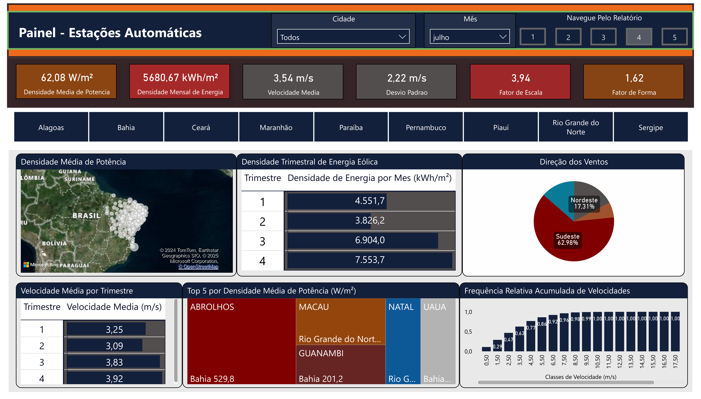
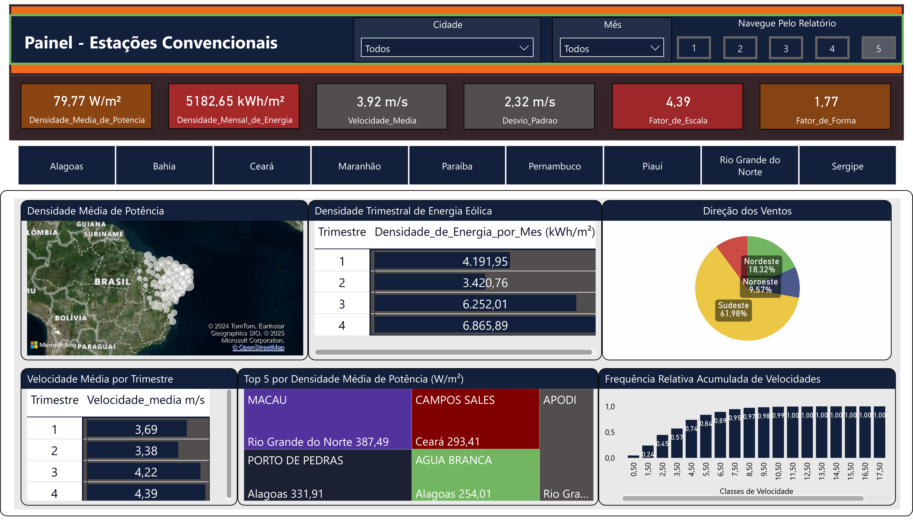
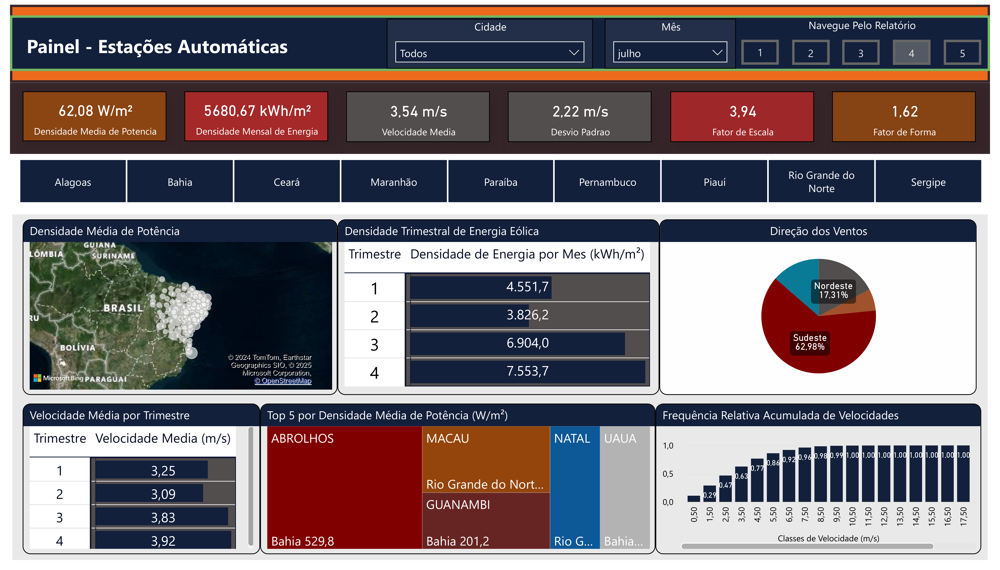
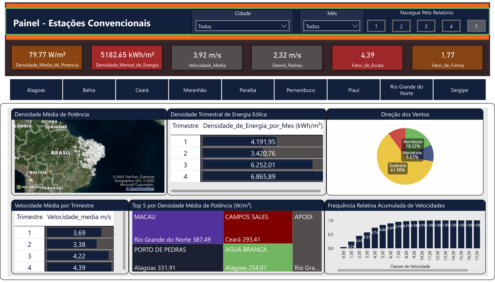

Operation of Hydropower Plants
This dashboard tracks the operation parameters of over 130 major Brazilian hydropower plants throughout the last 20 years, comprising metrics for power and energy generation, as well as for the water fluxes.


Agricultural and Biofuel Production
This report sheds light on the national manufacture of biomethane, biodiesel and ethanol. It also encompasses production of the 71 most important agricultural goods within a timespan of 20 years in the country. Only official datasets were used.


Wind Resource Assessment
This project deals with the wind potential assessment of the Northeast region of Brazil. It covered data from over 200 weather stations (both conventional and automatic), made public by the National Institute of Meteorology (INMET).


 



Decentralized Photovoltaic Generation
This dashboard addresses statistical parameters related to decentralized photovoltaic generation plants across the whole country of Brazil. It incorportes data from the National Agency of Electricity, the National Institute for Space Research, and the Brazilian Institute of Geography and Statistics.